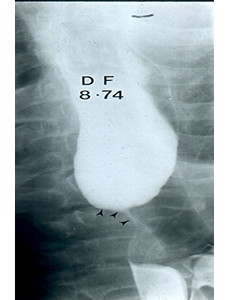
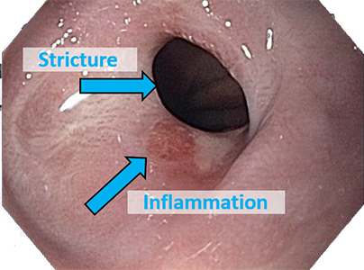

Module: Dysphagia and the Digestive Tract
Janet L. Poole, PhD, OTR/L, and Cindy Mendelson, PhD, RN, and Dinesh Khanna, MD, MS
In addition to a careful history in which your physician will ask you about your swallowing and eating, there are also several tests that are used to diagnose dysphagia and reflux.
Barium swallow and upper GI series
A barium swallow is a test that allows the doctor to look at the outline of your esophagus and your stomach on an x-ray while you swallow. In a barium swallow, you swallow a liquid with a substance called barium mixed in a drink. The doctor looks for motility (movement) of the muscles, areas that may look narrow, and any sores on the lining of the esophagus or stomach.
Endoscopy
An endoscopy is a test preformed by a specialist called a gastroenterologist (a doctor who specializes in problems of the digestive tract). During the test, a small tube (endoscope) that has a camera on the end is inserted through your mouth, down your esophagus, and into your stomach. The camera allows your doctor to see your esophagus and your stomach and to find any sores or narrowing (strictures) you may have. Before taking the test, you will be given a drug to help you relax, and the back of your throat will be sprayed with a numbing medication to prevent you from gagging during the procedure.
